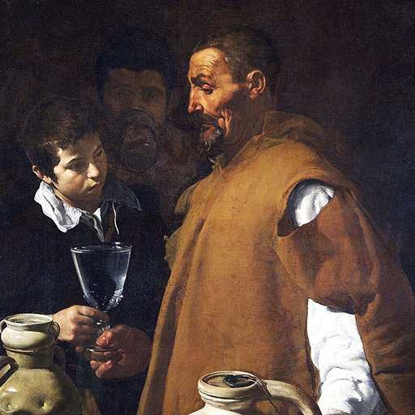

Hexagram 27 – Yi: Nourishment
Upper: Mountain (☶) · Lower: Thunder (☳)

Core Meaning
Pay attention to what you take in and what you put out. Food, words, information, and habits all shape your condition. Choose what truly nourishes you and learn from reliable sources.
“I choose words, food, and habits that support my body and mind.”
Blessing
May you care for yourself well and choose the people, habits, and inputs that truly support you.
Guidance by Life Area
Love
A relationship grows through daily nourishment more than occasional intensity. Speak with care and build small habits that make both people feel supported.
Use words that support rather than wound:
- Pay attention to daily interaction, not only romance.
- Build routines that work for both of you.
Career
Sustainable work depends on the right rhythm. Reduce what drains you, make room for learning, and stop treating burnout as productivity.
Balance work with recovery:
- Reduce draining tasks and increase useful learning.
- Learn from people worth learning from.
Health
Health is shaped by what you take in and how you recover. Favor real nutrition, adequate rest, and less excess.
Notice whether your diet truly supports you:
- Reduce excess and highly processed food.
- Protect sleep and mental energy.
Finances
Stable finances come from habits: spend within your means, save regularly, and direct money toward what truly matters.
Spend within your means:
- Save regularly and cut mindless expenses.
- Reserve money for long-term priorities.
Relationships
Notice whether the people and information around you restore or drain you. Choose relationships and inputs that protect your energy.
Stay close to relationships that help you grow:
- Notice what leaves you energized or drained.
- Protect your attention and energy.